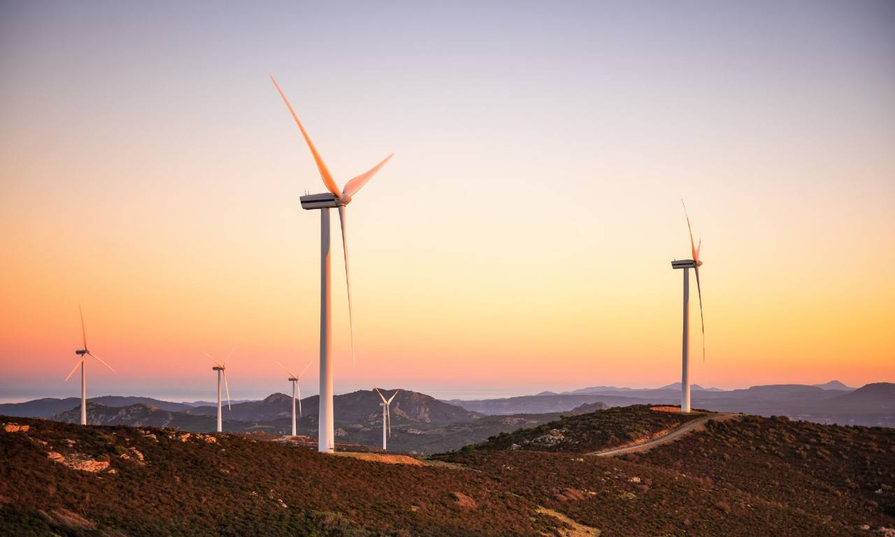

¿Que es?
¿Qué es la energía eólica? La energía eólica es la energía que se obtiene del viento. Se trata de un tipo de energía cinética producida por el efecto de las corrientes de aire. Esta energía la podemos convertir en electricidad a través de un generador eléctrico. Es una energía renovable, limpia, que no contamina y que ayuda a reemplazar la energía producida a través de los combustibles fósiles. El mayor productor de energía eólica del mundo es Estados Unidos, seguido de Alemania, China, India y España. En América Latina el mayor productor es Brasil. En España, la energía eólica abasteció de electricidad al equivalente a 12 millones de hogares, esto es un 18% de las necesidades del país (Fuente AEE). Esto significa que gran parte de la energía verde que ofrecen las compañías eléctricas del país, incluyendo la que lleva a tu hogar factorenergia, proviene de los parques eólicos y tiene este origen renovable.

tipos de energia eolica
1 energia Eolica Terrestre
La energía eólica terrestre se encarga de producir energía eléctrica a partir del aprovechamiento del viento que realizan los parques eólicos emplazados en tierra. Para ello, se instalan una serie de aerogeneradores capaces de transformar la energía cinética del viento en energía eléctrica apta para el consumo e integrarla en la red de distribución.
2 Energia Eolica Marina
La energía eólica marina es aquella fuente de energía que se obtiene al aprovechar la fuerza del viento que se produce en alta mar, donde este alcanza una velocidad mayor y más constante debido a la inexistencia de barreras. Para explotar al máximo este recurso, se desarrollan megaestructuras asentadas sobre el lecho marino y dotadas con las últimas innovaciones técnicas.
2 Energia Eolica Distribuida
La energía eólica marina es aquella fuente de energía que se obtiene al aprovechar la fuerza del viento que se produce en alta mar, donde este alcanza una velocidad mayor y más constante debido a la inexistencia de barreras. Para explotar al máximo este recurso, se desarrollan megaestructuras asentadas sobre el lecho marino y dotadas con las últimas innovaciones técnicas.
Tipos de elice
1 Turbina tipo savonius
Su diseño simple permite que su construcción sea de bajo costo en comparación con aquellas de eje horizontal. Su propósito es el de convertir la energía del viento en un momento par en el eje de rotación vertical; el arrastre empuja las palas para generar un torque en el eje al que se conectan
1 Turbina tipo hawt
El funcionamiento de los HAWT se basa en la conversión de la energía cinética del viento en energía mecánica a través de las palas del rotor. Esta energía mecánica se transmite al generador a través del eje y el multiplicador de velocidad, convirtiéndose finalmente en electricidad.
1 Turbina tipo H-Rotor
El rotor H es una turbina eólica de eje vertical típica que pertenece a la categoría de turbinas eólicas Darrieus. Este diseño consta de una serie de palas aerodinámicas montadas en un eje giratorio.
1 Turbina tipo Darrieus
Su diseño simple permite que su construcción sea de bajo costo en comparación con aquellas de eje horizontal. Su propósito es el de convertir la energía del viento en un momento par en el eje de rotación vertical; el arrastre empuja las palas para generar un torque en el eje al que se conectan
zona de graficos
en esta zona podras ver y encotrar 4 graficas de 4 diferentes paises latinoamericanos en las que puedes ver y analizar el alcance de la energia eolica